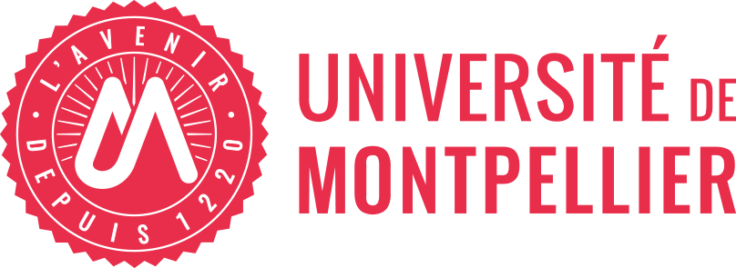
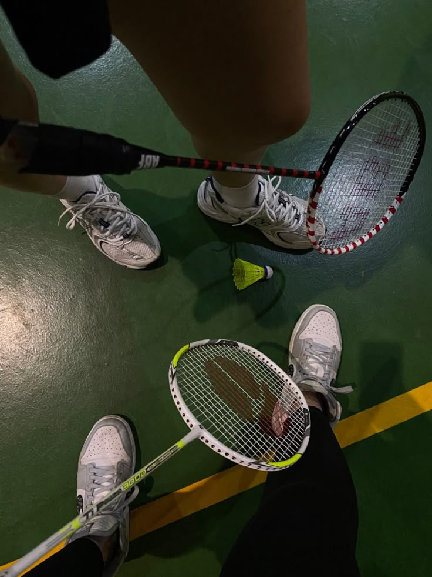
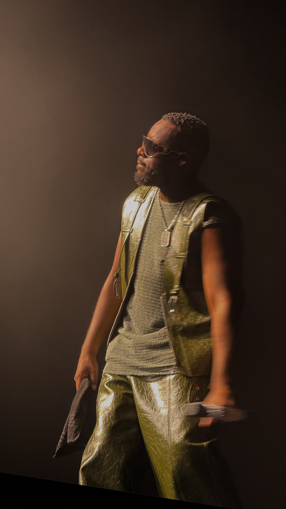

Mes études
Je suis actuellement étudiante en troisième année de BUT Techniques de Commercialisation à l'IUT de Montpellier, une formation qui me permet d'acquérir des compétences solides en marketing, en négociation commerciale, en communication et en gestion de projet. Au fil de mes études, j'ai l'opportunité de travailler sur des projets concrets et professionnalisants, ce qui me permet de renforcer mes connaissances théoriques tout en développant une réelle expérience de terrain. Je suis également en attente de réponses pour intégrer un Master en marketing digital à la rentrée 2027.

Je suis passionnée par le marketing digital, un domaine qui allie créativité et stratégie. Plus particulièrement, je m'intéresse à la conception de packagings, à la création de supports visuels et à la production de contenus pour les réseaux sociaux. Mon objectif professionnel est de travailler dans le marketing numérique, notamment dans la communication en ligne, la gestion des réseaux sociaux ou la stratégie de marque.
Ma vie professionnelle
En parallèle de mes études, je suis actuellement en alternance au CFA EnSup-LR en marketing digital et communication : je conçois des supports de communication, j'anime les réseaux sociaux et je participe à des conférences ainsi qu'à l'événementiel. Avant cela, j'ai travaillé un an en CDI chez Apple Odysseum, une expérience formatrice qui m'a permis de développer des compétences clés comme la relation client, la communication et la gestion de situations variées. Ces expériences, complémentaires, renforcent au quotidien ma capacité d'adaptation, mon sens du service et ma réactivité au sein d'environnements dynamiques et exigeants. Elles nourrissent aussi un projet qui me tient à cœur : à terme, j'aimerais créer ma propre entreprise, et chaque mission menée aujourd'hui est une occasion d'apprendre les rouages du métier en vue de ce projet entrepreneurial.
Mes loisirs
En dehors de mes études et de mon travail, mes loisirs occupent une place importante dans mon quotidien et m'aident à garder un bon équilibre. La photographie est l'une de mes passions : même si je suis encore débutante, j'aime apprendre et progresser en capturant des moments, des ambiances et des détails qui racontent une histoire, que ce soit en contexte sportif ou lors de concerts. Le badminton (option SUAPS) me permet de rester active, de me vider l'esprit et de me dépasser, tout en m'apportant discipline et persévérance. J'apprécie aussi des activités plus calmes et créatives, comme le nail art, qui me permet de me détendre tout en laissant parler mon sens créatif. Enfin, la musique m'accompagne chaque jour et les concerts sont pour moi une véritable source d'énergie et d'inspiration.


